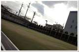

| 零～紫之日記 另一個故事 第三話 |
| ||
|

舊校舍的舊會議室裡，比往常更加昏暗，空蕩的室內迴盪著雨聲。 因第六堂的體育課而累壞的我，跑來這拿備用傘後，就一直待在這兒。 原本留在這的幾名社員也都回家去了。剩下我一人呆望下著雨的中庭。 在這種雨天，如果從窗外看見坐在這舊校舍裡的我， 那才真的叫看見「幽靈社員」吧。 從中庭至舊校舍，纏繞叢生的紫色的花，被雨點打濕。 據說這花在這舊校舍建造之前，就已經生長在這地方了。 鐵線蓮。花語是「高潔」「美麗的心」。跟我們蠻不搭調的。 紫色的花…。這麼說來，和那日記是同樣的顏色。 邊這樣迷濛地想著，邊將視線移到窗戶上的水滴時，發覺中庭的花叢間有個人影。因為有點遠，看得不是很清楚，但這樣連傘也不撐地站在雨中，讓我有點好奇。大概是失戀了吧？！ 為了想看清楚那個人影，就在我想貼近窗戶仔細瞧時， 忽然一個影子落在身後。 『怎麼啦？還沒回家啊？』 依子不知何時已經站在我身後。她大概也是來拿備用傘的吧。 外面還在下著雨，而且我也還正累著。我像是演戲般地伸了個懶腰。 『嗯—是阿。反正也沒什麼急事需要趕著回去。…依子你呢？』 依子說她被導師捉去商談畢業後出路的問題。 明天該不會輪到我了吧？…感覺一陣沒力地趴在桌上。而依子又像往常一樣小聲地開始對我說悄悄話。 『這麼說來，你有聽說過學姐的傳聞的後續發展嗎？』 說得好像是除了她之外還有人在關心這傳聞似的。 『學姐在不久前樣子就開始有點怪怪的…好像有點睡眠不足。保健室老師說她一直被鬼壓床，像變成了人偶似的。』 「學姐」…長谷部老師的傳聞，我是不知道是否和都市傳說有關聯， 但那個「陰氣男」的確也特別注意這件事。 關於紫之日記，確實有和「人偶」、「鬼壓床」有關的小故事。 |
||
|
紫之日記夾著一張舊人偶的照片。 不可以盯著它低著頭的臉看，否則它會抬頭看你。 人偶在等著代替它的人。 它抬頭看你的那張臉，就是曾經被囚禁在裡面的人，被削去的臉。 只要和人偶四目相接的人，從那天開始，就會每天被鬼壓床。 鬼壓床從手腳開始慢慢延伸，當睜著的眼睛無法動彈時。 有個東西慢慢接近你。 那東西會開始觸摸無法動彈的身體，把身體當成人偶般操弄。 身體被操縱著，與自己意志無關地開始動起來。 不准閉上的眼睛看見的是… 闇夜裡點著的古老檯燈。演奏著不可思議曲子的鋼琴。 變成人偶的自己的身體，然後，窺伺著自己的臉的… …穿黑衣的女人。 在她找到下一個「替代的人偶」前，她不會離開這個人偶。 |
||
|
穿黑衣的女人。是紫之日記各式各樣的小故事裡共通的人物。 但，關於那「穿黑衣的女人」的故事，卻什麼都沒提到。至少在我和依子的所知範圍內沒有。 『裕子，回家了啦---。還累的話，我們去吃點甜的吧。』 因為依子的呼喚，我邊發出痛苦的呻吟，沉重地站起來。不知為何地視線望向窗外。 而中庭紫色花叢間，已不見那個黑色人影。 |
||
| ||
|
- http://www.nintendo.co.jp/3ds/alcj/productionnote/anotherstory.html |

| 上一頁 | － 3 / 6 － | 下一頁 | ||